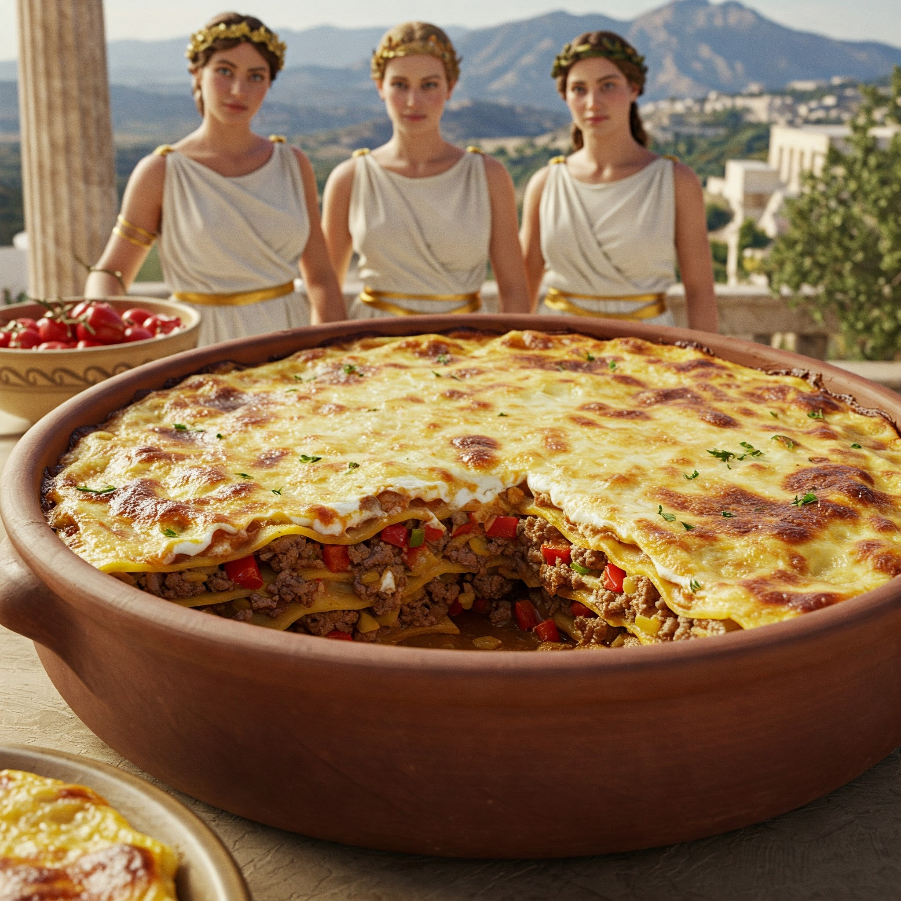

Home
Ambrosial Greek Lasagna

A feast fit for the Gods! This image depicts a magnificent Greek Lasagna, worthy of Mount Olympus itself. Layers of delicate pasta sheets cradle a rich meat sauce infused with fragrant herbs and spices. A blanket of creamy béchamel sauce and a golden crust crown this culinary masterpiece. Imagine the tantalizing aroma filling your kitchen as this divine dish simmers to perfection. Follow this recipe to bring a taste of heavenly cuisine to your own table and impress your loved ones with a truly unforgettable meal.
- Onions
- Vegan Beef
- Cheese Creme